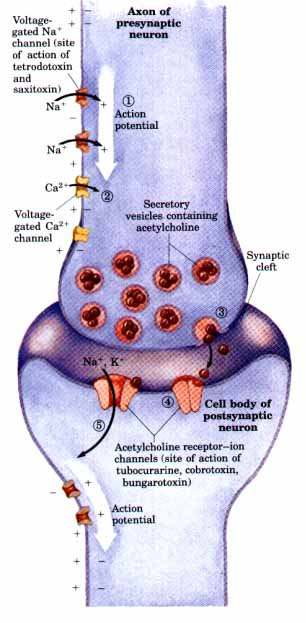
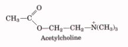
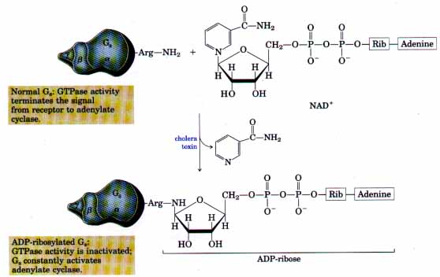
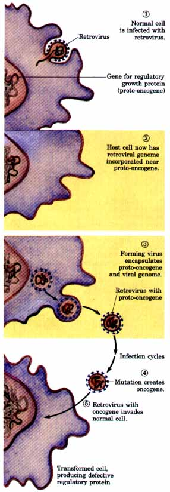
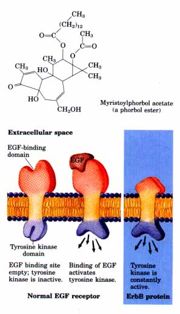

| In a fourth class of signal transducers,
receptors are coupled directly or indirectly to ion
channels in the plasma membrane. The best-understood
example of such a receptor is the nicotinic acetylcholine
receptor, which responds to the neurotransmitter
acetylcholine. It is found in the postsynaptic cells in
certain nerve synapses (Fig. 22-34) and in the junction
between a muscle fiber and the neuron that controls it.
The acetylcholine receptor complex (Mr 250,000) is
composed of four different polypeptide chains, one of
which is present in two copies. The transmembrane
arrangement of these five chains provides a hydrophilic
channel through which ions can traverse the lipid
bilayer. When acetylcholine released from the presynaptic
nerve ending binds to its receptor in the postsynaptic
cell (Fig. 22-34), the receptor-ion channel opens,
allowing transmembrane passage of Na+ and K+ ions (pp.
292-293). The receptor is therefore referred to as a
ligand-gated ion channel. The resulting depolarization of
the postsynaptic membrane triggers muscle contraction or
initiates an action potential in the postsynaptic neuron. The action potential is a wave of transient depolarization that sweeps the neuron from the site of the initial stimulus (in the cell body of the neuron), along the long, thin cytoplasmic extension (axon), to the next synapse. Essential to this signaling mechanism are several types of ` voltage-gated ion channels in the plasma membrane of the neuron. These channels, formed by transmembrane proteins, open and close in response to changes in the transmembrane electrical potential. Along the entire length of the axon are voltage-gated Na+ channels (Fig. 22-34), which are closed when the membrane is polarized, but open briefly when the membrane potential is reduced (i.e., during depolarization). After each opening of a Na+ channel there follows a brief refractory period during which the channel cannot open again, and thus a unidirectional wave of depolarization sweeps from the nerve cell body toward the end of the axon. At the distal tip of the neuron are voltage-gated Ca2+ channels. When the wave of depolarization reaches these channels they open, letting Ca2+ enter from the extracellular space and triggering acetylcholine release into the synaptic cleft (Fig. 22-34). Acetylcholine dif fuses to the postsynaptic cell, where it binds to acetylcholine receptors; thus the message is passed to the next cell in the circuit. Toxins, Oncogenes, and Tumor Promoters Interfere with Signal TransductionsBiochemical studies of signal transductions have led to an improved understanding of the pathological effects of toxins produced by the bacteria that cause cholera and pertussis (whooping cough). Both toxins are enzymes that interfere with normal signal transductions in the host animal. Cholera toxin, secreted by Vibrio cholerae found in contaminated drinking water, catalyzes the transfer of ADP-ribose from NAD+ to the a subunit of Gs, blocking its GTPase activity (Fig. 22-26) and thereby rendering it permanently activated (Fig. 22-35). This results in continuous activation of the adenylate cyclase of intestinal epithelial cells, and the resultant high concentration of cAMP triggers continual secretion of Cl--, HCO3-- , and water into the intestinal lumen. The resulting dehydration and electrolyte loss are the major pathologies in cholera. The pertussis toxin produced by Bordetella pertussis catalyzes ADP-ribosylation of Gi, preventing GDP displacement by GTP and blocking inhibition of adenylate cyclase by Gi; this defect produces the symptoms of whooping cough, including hypersensitivity to histamines and lowered blood glucose. |
 Figure 22-34 Role of voltage-gated and ligandgated ion channels in passage of an electrical signal between two neurons. Initially, the plasma membrane of the presynaptic neuron is polarized, with the inside negative; this results from the action of the electrogenic Na+K+ ATPase, which pumps three Na+ outward for every two K+ pumped into the neuron (see Fig. 10-22). l. A stimulus to this neuron causes an action potential to move downward along its axon (white arrow). The opening of one voltage-gated Na+ channel allows Na+ entry, and the resulting local depolarization causes the adjacent Na+ channel to open, and so on. The directionality of movement of the action potential is ensured by the brief refractory period that follows the opening of each voltage-gated Na+ channel. 2. When this wave of depolarization reaches the axon tip, voltage-gated Ca2+ channels open, allowing Ca2+ entry into the presynaptic neuron. 3. The resulting increase in internal [Ca2+] triggers exocytosis of the neurotransmitter acetylcholine into the space between the neurons (synaptic cleft). 4. Acetylcholine binds to its specific receptor in the plasma membrane of the cell body of the postsynaptic neuron, causing the ligand-gated ion channel that is part of the receptor to open. 5. Extracellular Na+ and K+ enter through this channel, depolarizing the postsynaptic cell. The electrical signal has thus passed to the postsynaptic cell, and will move along its axon to a third neuron by this same sequence of events. The effects of the toxins shown in parentheses are discussed on p. 774.  |
The critical importance of ligand- and voltage-gated ion channels in nerve signal conduction as described above is clear from the effects of several naturally occurring toxins. Tubocurarine, the active component of curare (used as an arrow poison in the Amazon), and toxins from snake venoms (cobrotoxin and bungarotoxin), block the acetylcholine receptor or prevent the opening of its ion channel (Fig. 2234). By blocking signals from nerves to muscles, these toxins cause paralysis and death. Tetrodotoxin (from the internal organs of puffer fish) and saxitoxin (produced by the marine dinoflagellate that occasionally causes "red tides") are also deadly poisons, which block neurotransmission by preventing the opening of Na+channels.
 |
Figure 22-35 The toxins produced by the bacteria that cause cholera and whooping cough (pertussis) are enzymes that catalyze transfer of the ADPribose moiety of NAD+ to an Arg residue of G proteins: Gs in the case of cholera (as shown here) and Gi in whooping cough. The G proteins thus modified fail to respond to normal hormonal stimuli. The pathology of both diseases results from defective regulation of adenylate cyclase and overproduction of cAMP. |
| Tumors and cancer are the result of
uncontrolled cell division. Normally, cell division is
highly regulated by a family of growth factors, proteins
that cause resting cells to undergo cell division and, in
some cases, differentiation. Some growth factors are cell
type-specific, stimulating division of only those cells
with appropriate receptors; other growth factors are more
general in their effects. Among the well-studied growth
factors are epidermal growth factor (EGF), nerve growth
factor (NGF), fibroblast growth factor (FGF),
platelet-derived growth factor (PDGF), erythropoietin,
and a family of proteins called lymphokines, which
includes interleukins (IL-1, IL-2, etc.) and interferon
y. There are also extracellular factors that antagonize
the effects of growth factors, slowing or preventing cell
division; transforming growth factor β (TGF,β) and tumor
necrosis factor (TNF) are such factors. These extracellular signals act through cell-surface receptors very similar to those for hormones, and by similar mechanisms: the production of intracellular second messengers, protein phosphorylation, and ultimately, alteration of gene expression. It is becoming clear that many types of cancer are the result of abnormal signal-transducing proteins, which lead to continual production of the signal for cell division. The mutated genes that encode these defective signaling proteins are oncogenes. (Oncogenes, and gene function in general, are discussed in Chapter 25.) Oncogenes were originally discovered in tumor-causing viruses, then later found to be closely similar to or derived from genes present in the animal host cells. Most likely, these viral genes originated from normal host genes (proto-oncogenes) that encode growth-regulating proteins. During certain types of viral infections, these DNA sequences can be copied by the virus and incorporated into its genome (Fig. 22-36). At some point during the cycle of viral infection, the gene can become defective as a result of truncation or some other mutation. During a subsequent infection, when this viral oncogene is expressed in its host cell, the abnormal protein product interferes with normal regulation of cell growth, and the unregulated growth can result in a tumor. Oncogenes can also arise from proto-oncogenes without viral involvement. Chromosomal rearrangements, chemical agents, radiation, or other factors can cause mutations in the genes that encode signal-transducing proteins. The resulting oncogenes express defective proteins and defective signaling, once again leading to tumor growth. Many viral oncogenes encode unregulated tyrosine kinase activities, and in some cases the oncogene product is nearly identical to a normal animal-cell receptor, but with the normal signal-binding site defective or missing. For example, the erbB oncogene product, a protein called ErbB, is essentially identical to the normal receptor for epidermal growth factor, except that ErbB lacks the domain that normally binds EGF (Fig. 22-37, p. 777). The erbB2 oncogene is commonly associated with adenocarcinomas (cancers) of the breast, stomach, and ovary. Other signal-transducing proteins with oncogene analogs are the GTP-binding (G) proteins. One well-characterized oncogene, ras, encodes a protein with normal GTP binding but no GTPase activity. When the Ras protein (p. 682) is produced in an animal cell, it remains always in the activated form, regardless of the signals coming through normal receptors. Again, the result is unregulated growth-cancer. Mutations in ras are associated with 30 to 50% of lung and colon carcinomas and over 90% of pancreatic carcinomas. The action of a group of compounds known as tumor promoters can also be understood in the light of what we know of signal transduction. The best understood of these compounds, phorbol esters, are chemically synthesized compounds that are potent activators of protein kinase C. They apparently mimic cellular diacylglycerol as second messengers (Fig. 22-32), but unlike naturally occurring diacylglycerols they are not rapidly metabolized. By permanently activating protein kinase C, these synthetic tumor promoters interfere with the normal regulation of cell growth and division. |
 Fignre 22-36 Conversion of a normal regulatory gene into a viral oncogene. 1. A normal cell is infected by a retrovirus, which 2. inserts its own genome into the chromosome of the host cell, near the gene for a regulatory protein (the proto-oncogene). 3. Virus particles released from the infected cell infrequently "capture" a host gene, in this case the proto-oncogene that encodes a regulatory protein. 4.During several cycles of infection, a mutation occurs in the viral proto-oncogene, converting it into an oncogene. 5. When the virus subsequently infects a normal cell, it introduces the oncogene into the host-cell DNA. ~anscription of the oncogene leads to the production of a defective regulatory protein that continuously gives the signal for host-cell division, overriding normal mechanisms for limiting cell division. Host cells infected with oncogene-carrying viruses therefore undergo unregulated cell division-they form tumors. Proto-oncogenes can also undergo mutation to oncogenes without the intervention of a retrovirus; these cellular oncogenes also confer unregulated growth on the cells in which they occur.  Figure 22-37 The product of the erbB oncogene the ErbB protein) is a truncated version of the normal receptor for epidermal growth factor (EGF). Its intracellular domain has the structure normally induced by EGF binding, but the protein lacks the extracellular binding site for EGF. Unregulated by EGF, ErbB continuously signals cell division. |